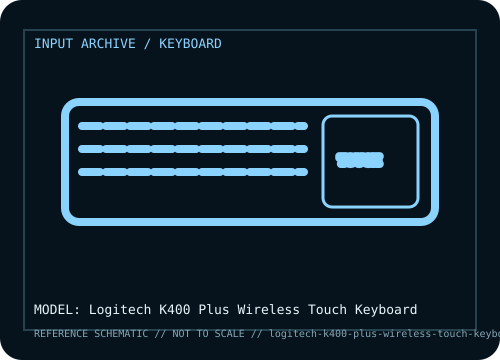

[ KEYBOARDS AND INTEGRATED POINTING DEVICES // IDENTIFIED COMPONENT ]
Logitech K400 Plus Wireless Touch Keyboard
Compact living-room keyboard with integrated touchpad and left/right click buttons, designed to control a compatible computer or media host from across a room.

MODEL IDENTIFICATION: K400 Plus Wireless Touch Keyboard; regional retail identifiers and key legends vary. Verify the bottom label, regional SKU, receiver, and revision against the sources before repair or compatibility claims.
Model specifications
| Catalog subcategory | Keyboards and integrated pointing devices |
|---|---|
| Form factor / layout | Compact keyboard with integrated multi-touch touchpad and left/right mouse buttons; it omits a separate numeric keypad. Layout and media-key legends are regional. |
| Key mechanism / controls | Low-profile membrane keyboard mechanism, not a mechanical-switch board. The built-in touchpad supplies pointer movement and gesture/click functions supported by the host driver. |
| Wired protocol | No wired typing mode. A USB-A wireless receiver connects to the host; keep the receiver with the keyboard. The receiver is not a Bluetooth adapter. |
| Wireless protocol | Proprietary 2.4 GHz Logitech receiver link; it is not a Bluetooth keyboard. Receiver type / pairing compatibility should be checked against the exact K400 Plus revision. |
| Host compatibility | Intended for compatible Windows computers and selected Android / smart-TV hosts with USB receiver support. Basic keyboard and pointer support varies by OS, application, and TV platform; do not assume every gesture or media key works everywhere. |
| Configuration / software | Logitech Options / Options+ support and available features depend on OS and generation. Ordinary USB keyboard and pointing events can be handled by host drivers, but advanced customization may not be. |
| Revision / service caveat | K400 Plus is different from the earlier K400 and from the K400 Plus variants bundled with different receiver or regional key legends. This unit is receiver-dependent and cannot pair directly over Bluetooth. |
Preservation and service notes
Record the unit label, keyboard layout, switch option, cable or matched receiver, host OS, and test mode before troubleshooting. For wireless models, distinguish Bluetooth pairing from proprietary receiver operation; for wired models, verify that the USB connection carries data rather than power only.
Keep saved layouts and firmware with the exact model/revision. Disconnect power before switch or keycap service, use manufacturer-safe cleaning methods, and do not infer a unit’s configuration from a broad product-family name.
Manufacturer and independent references
- Logitech — K400 Plus product pagePrimary manufacturer product reference for identifying this model and its stated feature set.
- RTINGS — Logitech K400 Plus reviewAdditional manufacturer documentation or independent model-specific testing; consult the revision/region applicable to the physical unit.
Product pages and support resources can change. Preserve the applicable manual or page revision when documenting a particular keyboard.